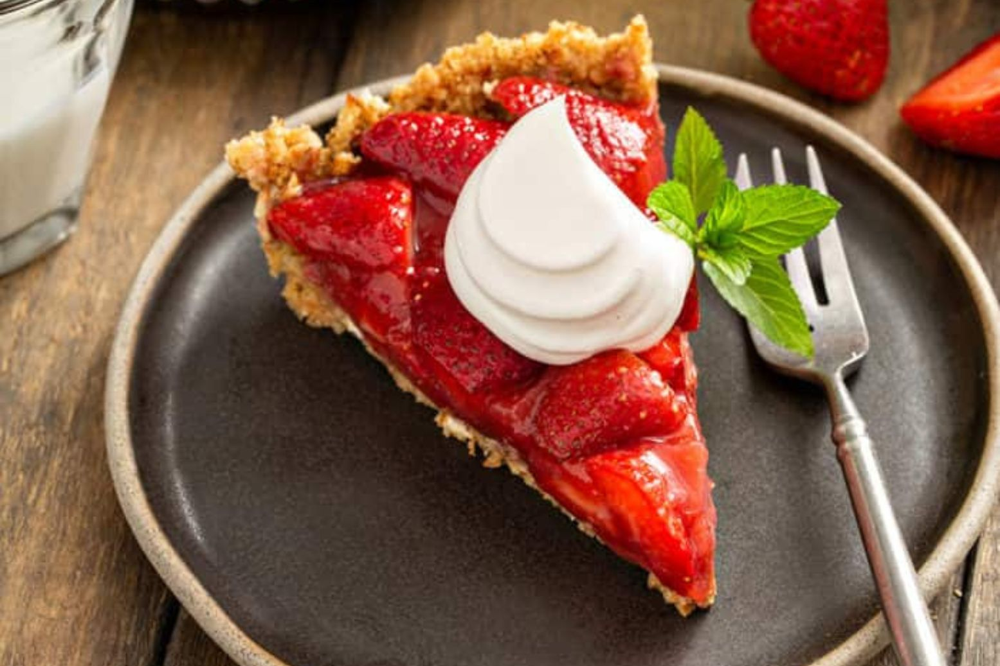

Den Bedste Opskrift til en lækker Jordbærtærte!
Klassisk lækker jordbærtærte med en fyldig vaniljecreme og sommersøde danske jordbær. Der er næsten ikke nogen bedre kage om sommeren end jordbærkage med saftig mazarinbund, der er smurt med et tykt lag mørk chokolade og derefter toppet med lækker vaniljecreme og masser af søde danske sommerjordbær, når de er i sæson Det smager vidunderligt og er en skøn dessert eller kage at servere for gæster og familien på en sommerdag..
Fremgangsmåde
- Pisk marcipan og sukker godt sammen. Pisk derefter smør i, til det er ensartet og luftigt. Pisk et æg i ad gangen og vend til sidst hvedemel i dejen. - Kom dejen i en smurt springform på 24 cm i diameter beklædt i bunden med bagepapir. - Bag kagen i en forvarmet ovn ved 175 grader varmluft i 25-30 minutter.- Tag kagen ud af springformen og fordel den mørke chokoladen ud over den varme kage. Lad derefter kagen køle helt af på en rist. Hvis chokoladen ikke er størknet, når kagen er kølet af, så sæt den i køleskab i et kvarters tid.
Ingredienser
- Mazarinbund
- 200 g marcipan, groftrevet
- 75 g sukker
- 200 g smør, blødt og stuetempereret
- 4 æg
- 50 g hvedemel
- 100 g mørk chokolade
- Vaniljecreme
- 0,50 vaniljestang
- 2,50 dl mælk
- 3 æggeblomme
- 15 g majsstivelse
- 60 g sukker
- 1 dl piskefløde
- Desuden
- 400 g jordbær
- 1 håndfuld frist mynte